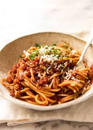
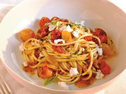
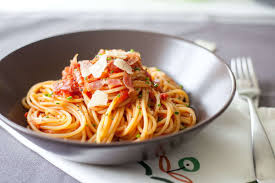
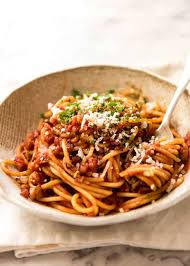
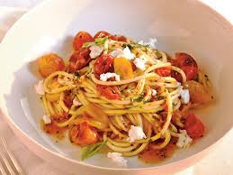
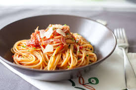
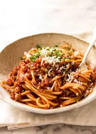
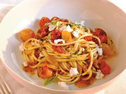
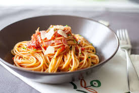

The dish should look like fresh made at that time its falvours should be seen. The smell of pasta is flour/eggy.
 





Pasta is a type of food typically made from an unleavened dough of wheat flour mixed with water or egg and formed into sheets or other shapes, then cooked by boiling or baking.
I love pasta because it is lightly dresses,not buried in
Ingredients
Steps :
The dish should look like fresh made at that time its falvours should be seen. The smell of pasta is flour/eggy.


